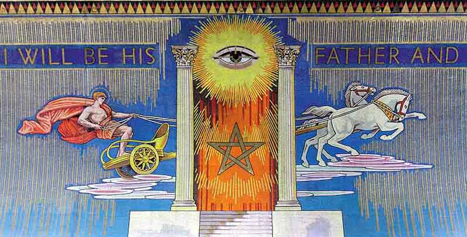

Oxford Brookes University Freemasonry
As the UGLE Universities Scheme Lodge for Oxford Brookes University, we particularly encourage applications from current Oxford Brookes students or staff. We also welcome membership from recent graduates who have moved to the Oxfordshire area as joining members or candidates to become a Freemason.
Please contact the Lodge Secretary to find out more today.
The UGLE Universities Scheme
Tradition and continuity are two of the values which characterise the relationship between Freemasonry and universities. It was over 200 years ago that the first university Lodge, Apollo University Lodge, was founded at Oxford, with Isaac Newton University Lodge following soon afterwards in Cambridge.
The UGLE Universities Scheme was set up in 2005 and there are now 87 Scheme Lodges in total. Their membership consists of undergraduates, postgraduates, senior members of the university and alumni, ranging in age from 18 upwards. All under-25s benefit from a 50% reduction in membership fees to make Freemasonry as accessible to as wide an audience as possible.
Blockley Lodge became the Universities Scheme Lodge for Oxford Brookes University in 2016 and we are always keen to hear from potential joiners, whether you are a student or staff member at Oxford Brookes University.